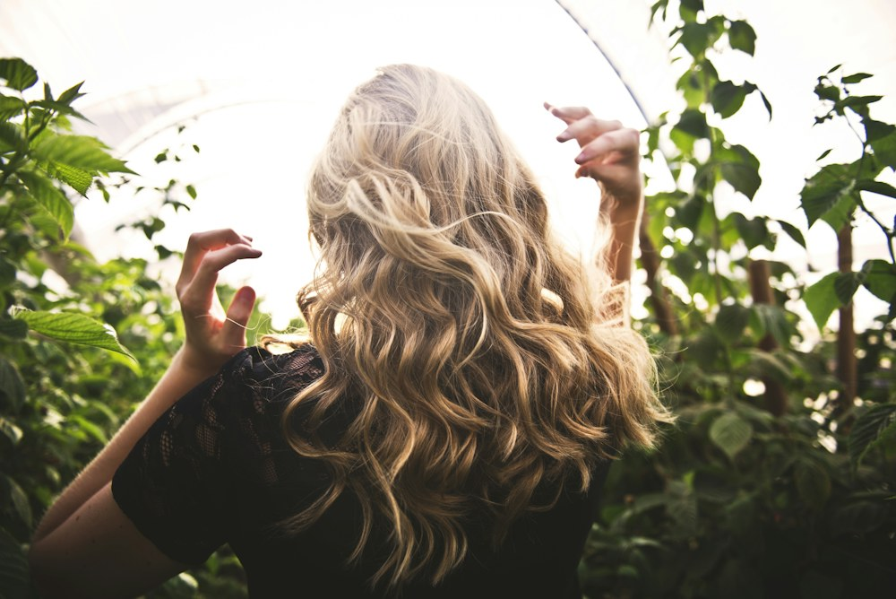
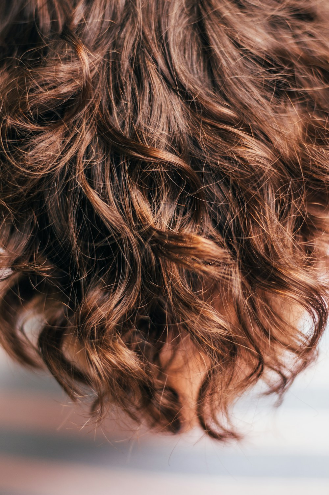
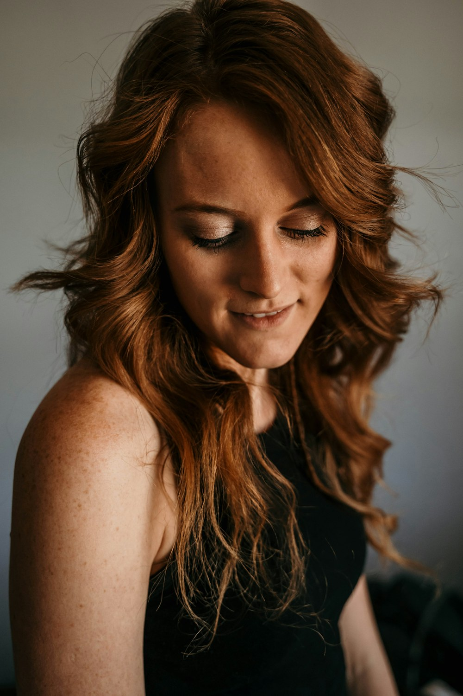
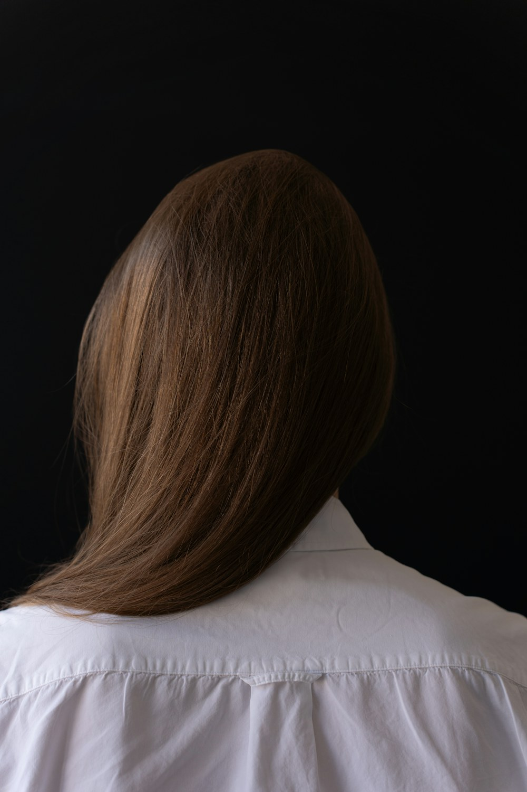
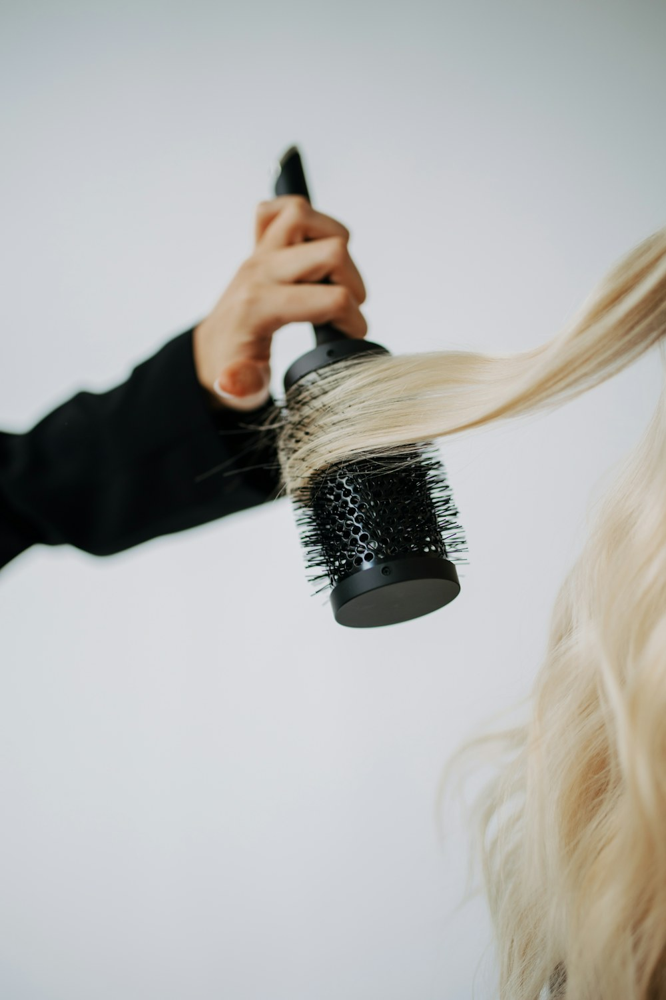
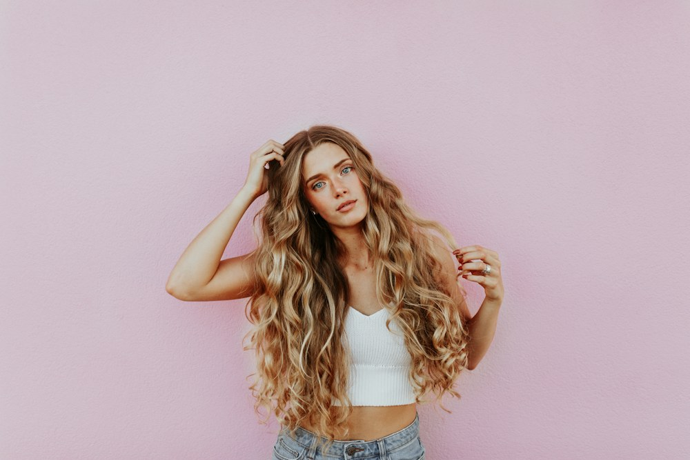
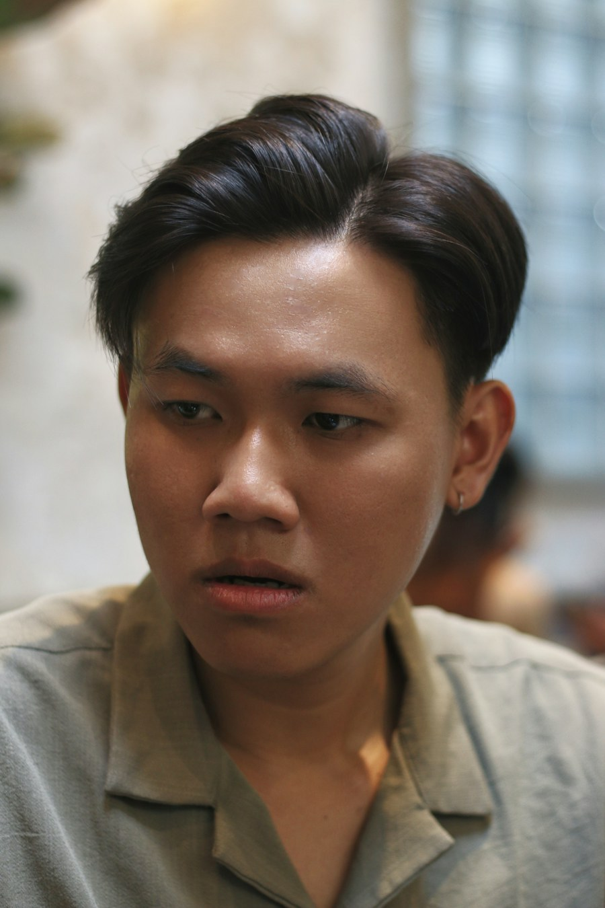
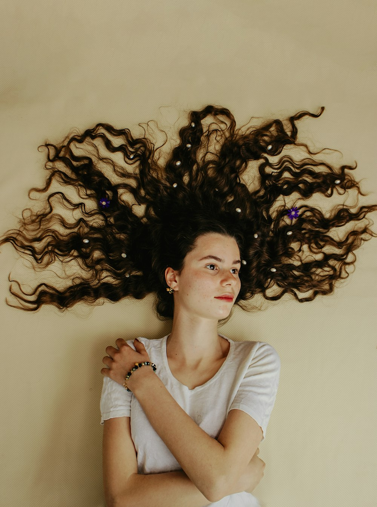
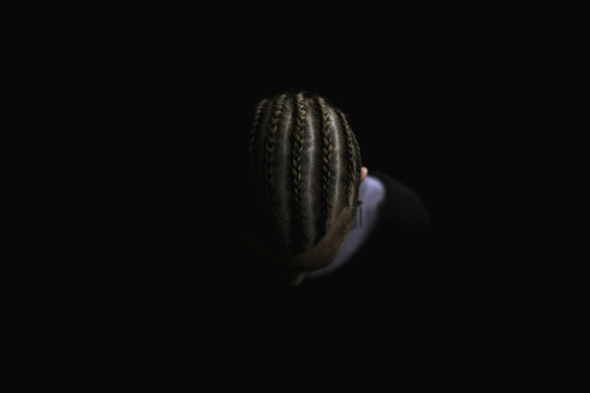

Alice Friseur Team · Köln-Porz
Ihr Haar.
Ihr persönlicher Stil.
Schnitt, Farbe und Styling –
individuell auf Sie abgestimmt.
01 / UNSERE LEISTUNGEN
Schnitt, Farbe
und neue Möglichkeiten.
Eine kleine Veränderung oder Lust auf etwas Neues? Entdecken Sie die Möglichkeiten für Ihr Haar.

Balayage
Farbe mit weichen Übergängen.

Haarfarbe
Ein neuer Ton, passend zu Ihnen.

Haarverlängerung
Mehr Länge und neue Möglichkeiten.
Und was darf es für Sie sein?
WEITERE LEISTUNGENSträhnen
Lichtreflexe, die Akzente setzen.
05Dauerhafte Haarglättung
Für eine glattere Haarstruktur.
06Keratinbehandlung
Pflege und ein glatteres Haargefühl.
07Dauerwelle
Neue Bewegung für Ihr Haar.
08Locken
Ihre Struktur im Mittelpunkt.
09Haarflechten
Strähne für Strähne ein eigener Look.
10Kinderhaarschnitt
Ein passender Schnitt für die Kleinen.

02 / Über Alice Friseur Team
Persönlich beraten.
Individuell gestaltet.
Ein Friseurbesuch beginnt mit einem guten Gespräch. Was gefällt Ihnen, was passt zu Ihrem Alltag und was möchten Sie verändern?
Ob neue Farbnuancen, mehr Länge oder eine andere Haarstruktur: Ihre Wünsche stehen im Mittelpunkt. Gemeinsam besprechen wir die Möglichkeiten für Ihr Haar.
Wir freuen uns, Sie in der Schmittgasse in Köln-Porz kennenzulernen.
03 / Inspiration
Ideen für Ihr Haar.
Farben, Formen, Haargefühl.
Anregungen für Ihre nächste Frisur.
Die Bilder zeigen neutrale Inspirationsmotive, keine Arbeiten des Salons.




04 / BIS BALD IN PORZ
Ihr Termin.
Ihr Weg zu uns.
Für Ihren Termin und Fragen zu unseren Leistungen erreichen Sie uns am besten telefonisch.
02203 83763 ALICE FRISEUR TEAMSchmittgasse 85
51143 Köln-Porz
WIR SIND FÜR SIE DA
Unsere Öffnungszeiten
- Montag
- 08:30 – 18:00
- Dienstag
- 08:30 – 18:00
- Mittwoch
- 08:30 – 18:00
- Donnerstag
- 08:30 – 18:00
- Freitag
- 08:30 – 18:00
- Samstag
- 08:30 – 14:00
- Sonntag
- Geschlossen
Ihr nächster Look beginnt mit einem Gespräch.